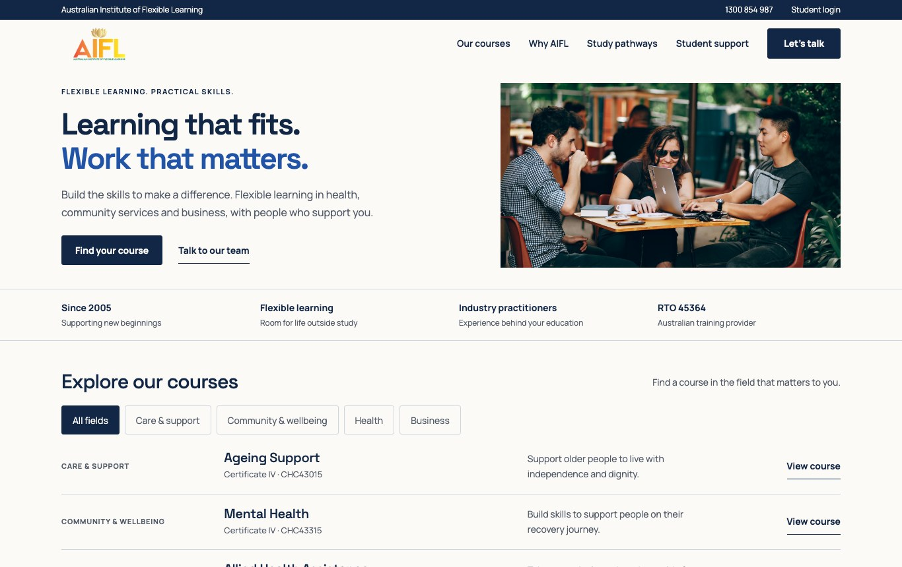
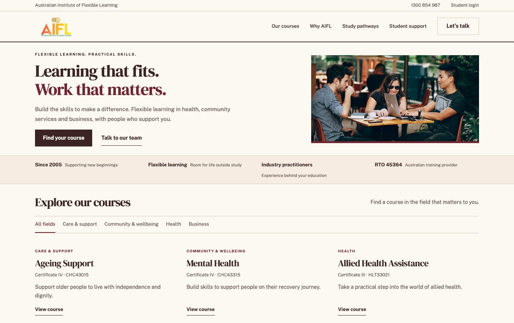
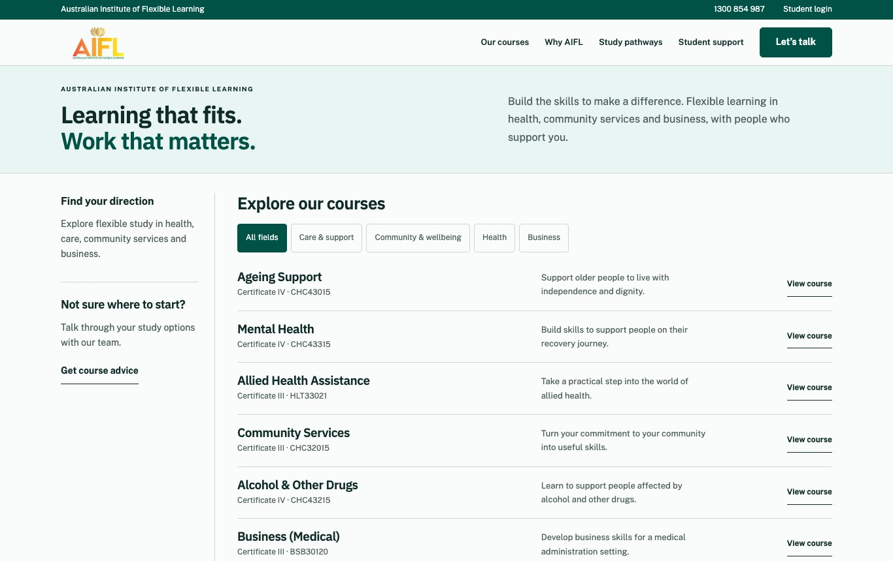
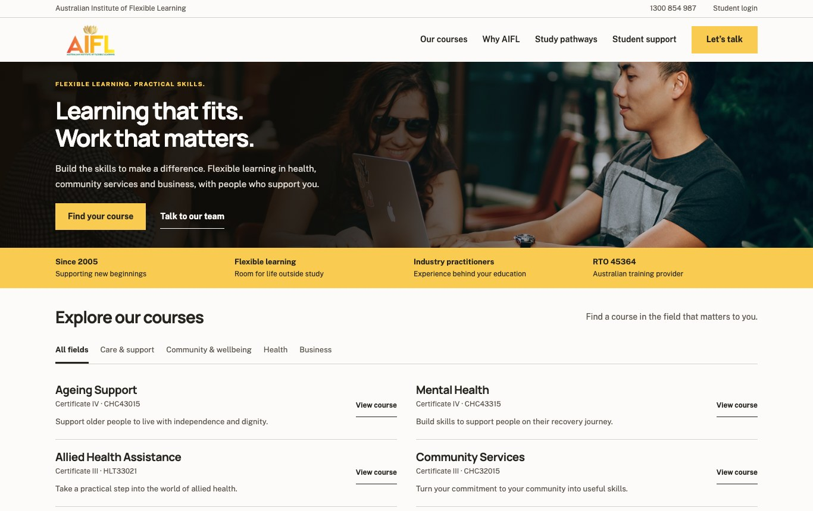
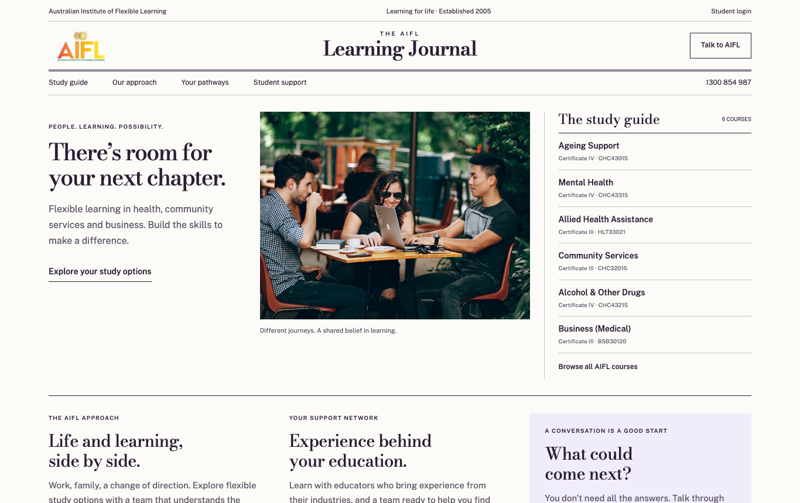
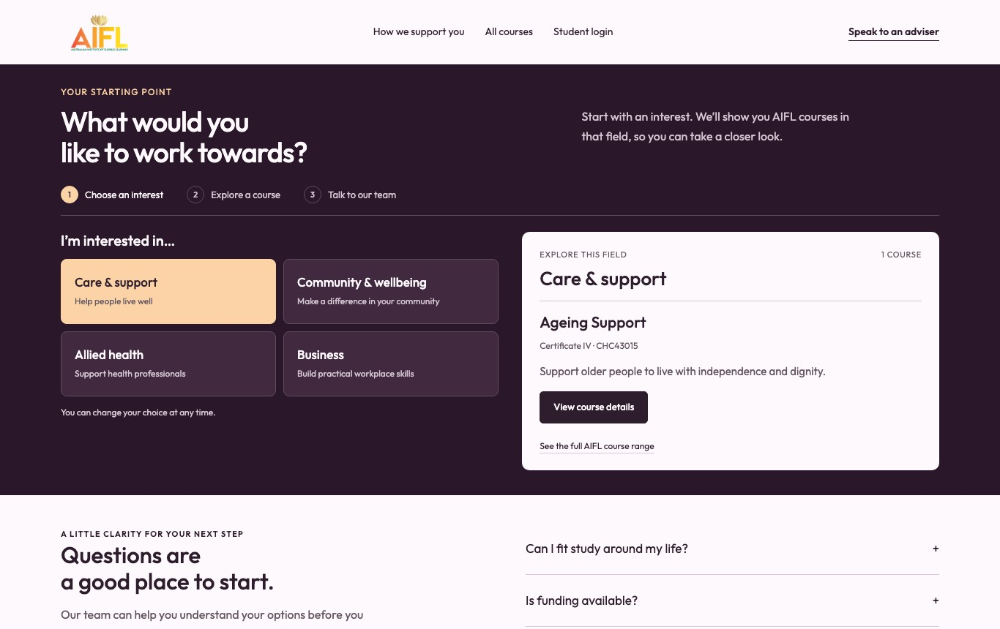
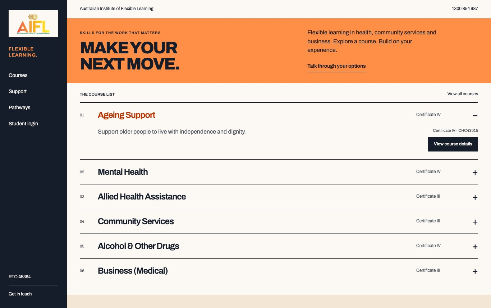
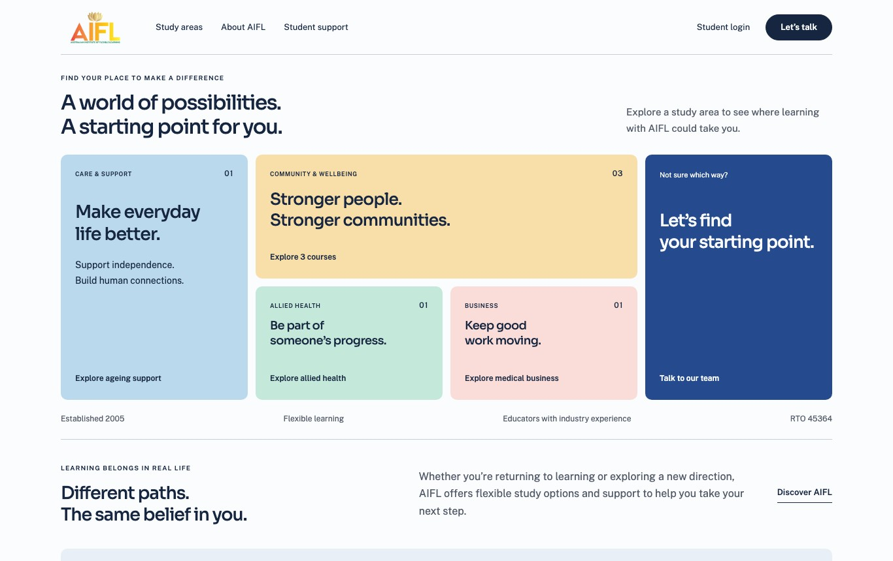

Australian Institute of Flexible Learning
Eight directions. Explore the options below and choose the direction that feels right for AIFL. Each uses the same course content and compact, laptop-friendly proportions.
Already have a favourite? Options 01–04 New directions 05–08 How to review Open a design, explore desktop and mobile, then copy your choice and feedback to send back.

01
Clear & Confident Original direction A balanced, familiar education website. Navy typography, a compact split hero and a straightforward course directory.
Character Clear · Professional · Direct
Best for A versatile, approachable first impression 
02
Editorial Academy A considered academic character. Serif headings, burgundy details and fine rules give the course catalogue a polished editorial feel.
Character Established · Thoughtful · Refined
Best for A stronger sense of academic identity 
03
Course Navigator A practical, course-first experience. Teal accents, a short introduction and an advice sidebar help visitors move straight into exploring study.
Character Focused · Useful · Contemporary
Best for Visitors who want to find a course quickly 
04
Community Focus A warmer, more expressive welcome. A compact photographic banner, charcoal and gold palette, and paired course rows put people at the centre.
Character Human · Confident · Welcoming
Best for A stronger emotional connection at first glance
A different way to explore AIFL
Four new structures. A journal, a guided choice, an expandable prospectus and a visual map.

05
Campus Journal New direction A magazine-style front page with a centred masthead, a lead story, a tall photograph and a separate course index. The layout reads like a compact institutional publication.
Structure Magazine masthead · Three-part front page · Course index
Character Editorial · Informed · Established
Best for An institution with a story to tell 
06
Guided Pathway New direction An interactive starting point built around a question. Visitors choose an interest and see relevant courses immediately, with practical answers below.
Structure Interest selector · Live course results · Question-led support
Character Supportive · Personal · Guided
Best for Helping undecided visitors take a first step 
07
Bold Prospectus New direction A strong typographic prospectus with a permanent navigation rail. Expandable course rows put detail on demand, framed by an orange introduction and crisp rules.
Structure Vertical navigation · Expandable rows · Type-led composition
Character Assertive · Structured · Distinctive
Best for A memorable identity with quick course exploration 
08
Course Atlas New direction A visual map of study areas. Unequal coloured panels replace the conventional hero and list; visitors open course details directly from the map.
Structure Spatial course map · In-place details · Asymmetric composition
Character Open · Visual · Exploratory
Best for Browsing by interest without a long page of courses Your preferred direction
What feels right for AIFL? Choose a direction and note anything you would adjust. You can mix details from different options.
Your selection stays in this browser. Nothing is sent automatically.